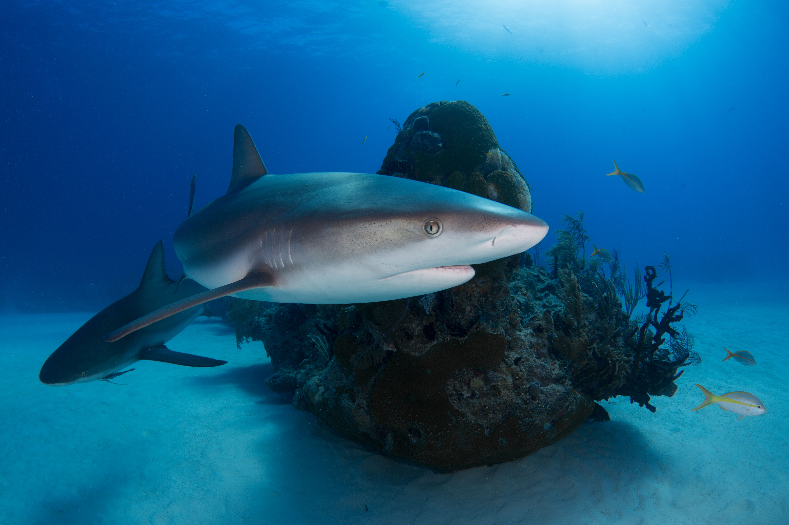
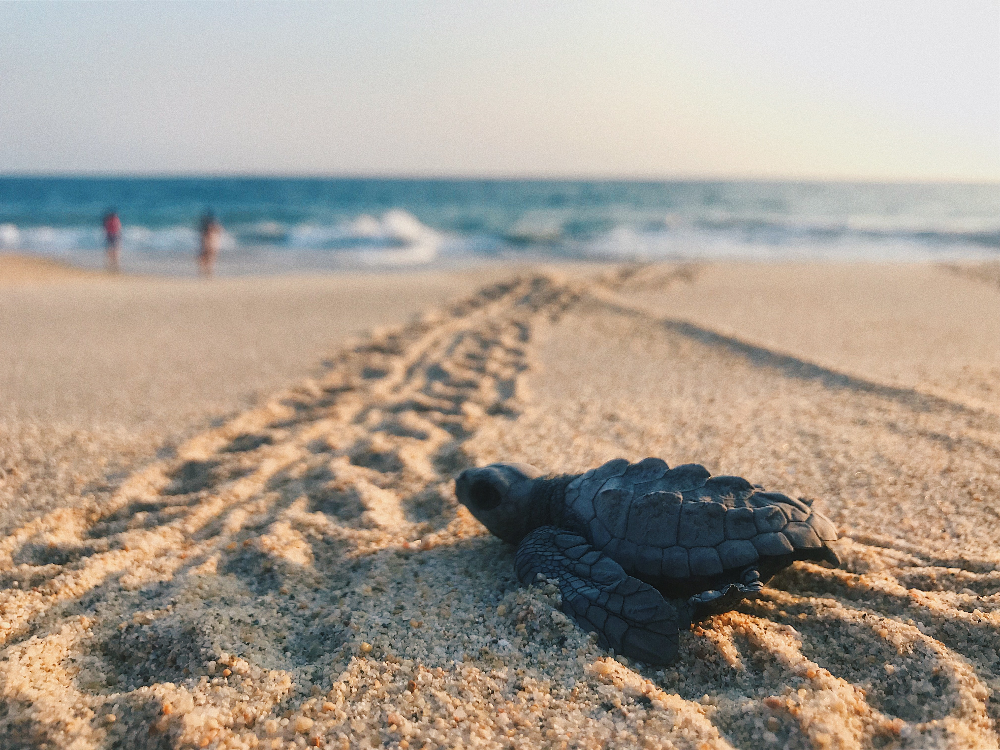

Βασικές κατηγορίες θαλάσσιων ζώων

Τα θαλάσσια ζώα χωρίζονται σε 3 κύριες ομάδες: το ζωοπλαγκτόν, το νηκτό και το βένθος.
Το ζωοπλαγκτόν αποτελείται από μικρούς ζωικούς οργανισμούς, οι οποίοι κινούνται με την βοήθεια των ρευμάτων
και των κυμάτων. Στο ζωοπλαγκτόν ανήκουν επίσης τα αυγά των ψαριών και οι οργανισμοί στο στάδιο της νύμφης,
που μεγαλώνοντας εντάσσονται στο νηκτό ή το βένθος.
Στο νηκτό ανήκουν ζωικοί οργανισμοί που μπορούν και κινούνται από μόνοι τους και ζουν κολυμπώντας στο νερό.
Σε αυτή τη κατηγορία ανήκουν τα περισσότερα ζώα της θάλασσας, από τα κοινά ψάρια και τα κεφαλόποδα (καλαμάρια, χταπόδια κα)
ως και τα θαλάσσια θηλαστικά (φάλαινες, δελφίνια κ.ά.).
Στο βένθος ανήκουν τα θαλάσσια ζώα που περνούν όλη τους τη ζωή προσκολλημένα στο θαλάσσιο πυθμένα. Στο βένθος ανήκουν
οι αστακοί, οι αστερίες, διάφορα σκουλήκια, σαλιγκάρια, μύδια και πολλά άλλα είδη. Μερικά είδη, όπως οι αστακοί,
είναι σε θέση να κολυμπήσουν στο κατώτατο σημείο της υδάτινης στήλης, αλλά η επιβίωση τους εξαρτάται άμεσα από τον θαλάσσιο πυθμένα.
Η θαλάσσια πανίδα είναι πιο πλούσια στα ρηχά νερά απ’ ότι στα βαθιά λόγω της αυξημένης φωτεινότητας, που ευνοεί
την ανάπτυξη υδρόβιας βλάστησης.
Θαλάσσια είδη υπό εξαφάνιση

Το μεγαλύτερο ποσοστό του πλανήτη καλύπτεται από θάλασσα, καθώς οι ωκεανοί καταλαμβάνουν το μεγαλύτερο μέρος του.
Έτσι, εκτός από εμάς, στον πλανήτη αυτό κατοικούν και πολλά θαλάσσια ζώα. Πολλές φορές όμως, ο άνθρωπος δεν τα σέβεται
και είτε από φόβο είτε για εμπορικούς σκοπούς, τα σκοτώνει. Δε γνωρίζει ότι μπορεί να του επιτίθενται για να προστατέψουν
τον εαυτό τους ή ακόμα και τα μικρά τους. Οι ενέργειες αυτές του ανθρώπου, έχουν ως συνέπεια πολλά από τα θαλάσσια είδη να
απειλούνται σήμερα με εξαφάνιση.Αυτά είναι:
Ο λευκός καρχαρίας (επιστημονική ονομασία: Carcharodon carcharias -
(Καρχαρόδων Καρχαρίας)), γνωστός και ως σπρίλλιος, μεγάλος λευκός, λευκός θάνατος ή και σκέτο καρχαρίας, είναι ένας εξαιρετικά
μεγάλος καρχαρίας που βρίσκεται στα παράκτια νερά κοντά στην επιφάνεια σε όλους τους σημαντικούς ωκεανούς. Είναι το μόνο είδος του γένους
του (Carcharodon) που υπάρχει ακόμα. Επίσης, είναι αναμφισβήτητα το μεγαλύτερο γνωστό αρπακτικό ψάρι.
Τα δελφίνια είναι
θαλάσσια θηλαστικά, που ανήκουν στην ίδια οικογένεια με τις φάλαινες. Υπάρχουν περίπου 17 γένη δελφινιών και 40 είδη. Απατώνται σε όλες
σχεδόν τις θάλασσες του κόσμου, καθώς και σε ορισμένα ποτάμια, όπως είναι ο Αμαζόνιος και ο ποταμός Γιανγκτσέ της Κίνας. Τα δελφίνια
θεωρούνται από τα πλέον ευφυή ζώα και έχουν καταστεί δημοφιλή στους ανθρώπους εδώ και πολλούς αιώνες για την παιχνιδιάρικη συμπεριφορά
τους και τη φιλική τους εμφάνιση.
 Η θαλάσσια χελώνα καρέτα (caretta caretta) εμφανίστηκε στη γη πριν από δεκάδες εκατομμύρια
χρόνια και αποτελεί μια από τις πιο επιτυχημένες μορφές ζωής στην ιστορία του πλανήτη μας. Είναι το μόνο είδος θαλάσσιας χελώνας που αναπαράγεται
στην Ελλάδα, όπου βρίσκονται οι πιο σημαντικοί βιότοποί της στη Μεσόγειο. Ωστόσο, τα τελευταία χρόνια, η υποβάθμιση και η καταστροφή του
βιότοπου εξαιτίας ανθρωπογενών δραστηριοτήτων, έχουν οδηγήσει σε δραστική μείωση των πληθυσμών της. Για πρώτη φορά εδώ και εκατομμύρια χρόνια,
η καρέτα απειλείται με εξαφάνιση.
Η μεσογειακή φώκια μονάχους (Monachus monachus), είναι το ένα από τα δύο εναπομείναντα είδη
φώκιας μοναχού της οικογένειας των φωκιδών. Κάποτε ήταν εξαπλωμένη σε όλες τις ακτές της Μεσογείου, της Μαύρης Θάλασσας και του ανατολικού
Ατλαντικού. Σήμερα, με αριθμό μικρότερο από 600 ζώα, συγκαταλέγεται στα σπανιότερα και πλέον απειλούμενα ζωικά είδη του πλανήτη και
χαρακτηρίζεται ως κρισίμως κινδυνεύον με αφανισμό από τη Διεθνή Ένωση Προστασίας Της Φύσης. Ο μισός περίπου πληθυσμός, γύρω στα 250-300 άτομα,
ζει στην Ελλάδα.
Η Όρκα , που αναφέρεται κοινώς ως φάλαινα δολοφόνος (και σπανιότερα ως "Μαύρο ψάρι"), είναι μία από τις οδοντοφόρες
φάλαινες. Οι Όρκες απαντώνται σε όλους τους ωκεανούς, από τις παγωμένες περιοχές της Αρκτικής και της Ανταρκτικής έως τις τροπικές θάλασσες.